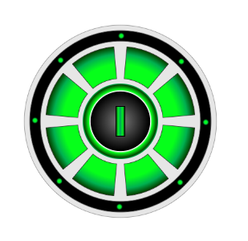
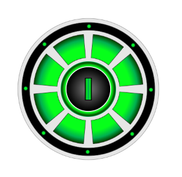
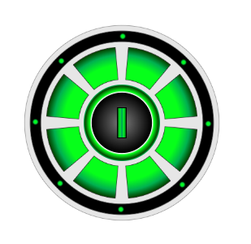

 

English | Русский
Round Interfaces Library - это коллекция классов графических объектов для построения круговых интерфейсов пользователя.

Круговые интерфейсы могут применяться с целью:
Данная библиотека разрабатывается с целью упростить процесс проектирования и реализации круговых интерфейсов.
Например, круговой индикатор прогресса можно создать в несколько строк кода:

HTML:<canvas id="progress-bar" width="200" height="200"> <div>Use a canvas-compatible browser</div> </canvas>JS:let canvas = document.getElementById('progress-bar'); let context = canvas.getContext('2d'); context.width = canvas.width; context.height = canvas.height; let cx = context.width/2; let cy = context.height/2;let bar = new SegmentProgressBar('bar', context, cx, cy, 50, 25);
bar.draw();
Библиотека написана на языке JavaScript.
Для отрисовки графических элементов используется HTML элемент Canvas.
Документация на английском и русском языках поставляется в составе библиотеки в форматах HTML и Markdown.
Для использования библиотеки необходимы базовые знания HTML и JavaScript.
js - основная папка с файлами библиотеки. Для использования библиотеки в собственном проекте достаточно подключить эти файлы.
docs - папка с документацией в .html формате. Документация приведена на английском и русском языках.
docs-md - папка с документацией в .md формате для исправления ошибок, доработки и использования в собственных проектах.examples - папка с примерами использования базовых графических объектов.
gui-examples-js - папка с примерами реализации интерфейсов пользователя, составленных из базовых графических объектов.Примеры описывают способы построения формы и анимации круговых интерфейсов.
css - папка с файломи стилей для оформления примеров.
svg - папка с векторными изображениями для оформления примеров.
sounds - папка с музыкальными файлами для тестирования кругового эквалайзера
Progress Bar - Индикатор прогресса
1.1. SegmentProgressBar - Индикатор прогресса в виде сегмента кольца
1.2. SegmentArrayProgressBar - Индикатор прогресса в виде сегментного массива
1.3. SegmentDotsArrayProgressBar - Индикатор прогресса в виде сегментного массива точек
Gauge - Измерительный прибор с круговой шкалой
2.1. SegmentArrow - Стрелка
2.2. SegmentGauge - Измерительный прибор
Timer - Таймер
3.1. SegmentTimer - Таймер с индиктором прогресса в виде сегмента кольца
3.2. SegmentArrayTimer - Таймер с индиктором прогресса в виде сегментного массива
3.3. SegmentDotsArrayTimer - Таймер с индиктором прогресса в виде сегментного массива точек
3.4. SegmentGaugeTimer - Таймер с индиктором прогресса в виде циферблата со стрелкой
Volume Control - Управление громкостью
4.1. SegmentKnob - Ручка-регулятор
4.2. SegmentSpiralVolumeControl - Регулятор громкости со спиральным индикатором
4.3. SegmentArrayVolumeControl - Регулятор громкости с индикатором в виде сегментного массива
SegmentEqualizer - Круговой эквалайзер
SegmentCaptcha - Круговой тест CAPTCHA
SegmentChart - Круговая диаграмма
SegmentRadar - Радар
Настояющую библиотеку можно использовать и дорабатывать в коммерческих, образовательных и личных целях.
Сообщения об ошибках и рекомендации по доработке можно направлять на электронную почту автора.
Версия: 2.0
Автор: Игорь Тиунов
E-mail: igor@tiunovs.com